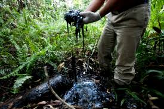
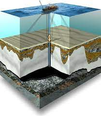

O petróleo é um recurso natural fóssil e não renovável que possui grande
importância política e econômica. A sua origem está atrelada a antigos depósitos orgânicos
formados em zonas de bacias sedimentares. Esse recurso natural é utilizado principalmente para
a produção de fontes de energia e como matéria-prima na indústria.
Extração de petrólro na Amazônia

A extração na Amazônia ocorre por causa do petróleo de Urucu, que sai de 2.300 metros de profundidade sendo um
tipo especial, leve, e rico em produtos nobres. Ele é o melhor petróleo produzido no Brasil, mais do que o petróleo,
Urucu produz gás, que abastece o Norte do país e parte do Nordeste. Dos poços também sai um outro tipo de gás, o natural,
que para aproveitá-lo, um supergasoduto está em fase de acabamento, onde começa em Urucu, passa por Coari e chega a Manaus.
Petrobrás
A Petrobras foi criada por Getúlio Vargas, onde na época era vista como uma garantia de monopólio do setor petrolífero por parte do Estado
e apesar da quebra do monopólio a Petrobras se consolidou no cenário nacional como a maior empresa do ramo petrolífero do país e uma das
maiores do mundo. A Petrobras nos dias de hoje atua na exploração, produção e comercialização de petróleo, gás natural e alguns derivados,
possuindo plataformas de petróleo, refinarias e redes de distribuição, onde nos últimos anos, houve uma expansão na sua atuação para os
setores de energia renovável e está presente em 19 países da América, África, Ásia e Europa.
Pré-Sal

A descoberta das reservas do pré-sal, no ano de 2007, fez o Brasil crescer no cenário internacional sobre às reservas provadas de petróleo.
O pré-sal abrange três grandes bacias petrolíferas na costa brasileira e recebe esse nome por ter se formado antes (na escala de tempo geológico)
da espessa camada de sal que se encontra sobre a imensa reserva petrolífera, que está situada a cerca de sete mil metros de profundidade.